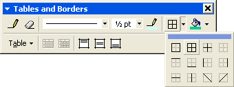
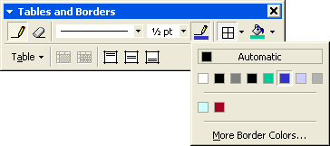
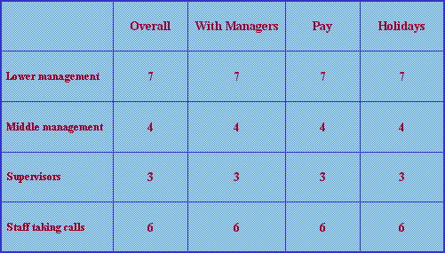

Free
powerpoint
Tutorials
|
Free
powerpoint
Tutorials
|
|
 home home |
Stay at Home and Learn | ||||
Format a Table Border in PowerPoint |
|||||
|
Tables 1, 2, 3, 4, 5, 6 Charts Flow Charts
To format the borders of your table, first select the whole table again. You do this by clicking anywhere inside of your table. Then, from the Tables and Borders toolbar, click Select Table from the menu. With the Table selected, have a look at the Tables and Borders toolbar:  The square button we've click on is the borders button, and the pop out menu is showing that the All Borders option has been selected (the second one on the top). Do this on your own Tables and Borders toolbar. From here, you can select just the outside border (the first one), or any of the internal borders. The darker lines shows you which one you are setting. The button just to the left of this is the colour you want for your borders. Click on this to see some colour options:  We've went for a darkish blue for our borders. Just to left of the colour option, there are the lines options. Click the dropdown list to see the options. You can have a variety of line styles, and sizes. In the image above, we have the normal line, and set to a size of ½. Our final table looks like this:  We have set a thicker outer border using the toolbar, and a thinner inner border. Changing the borders is a fiddly process in PowerPoint, but persevere and you'll get the hang of them!
For the final slide in this presentation, we'll sum up using a bulleted list.
|
||||